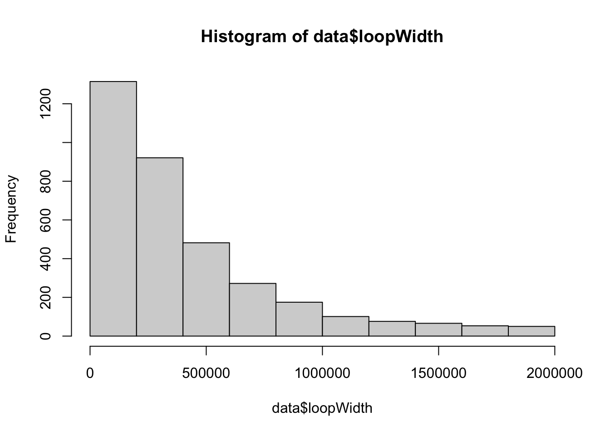

This shiort tutorial aims to integrate example chromation loops that you may have acquired through hichipper etc. The files to be used are in the Github page remeseirogrp/3D-genomics-blueprint
Contents
Workflow
Overlap of loops
UCSC .interact files
Annotating loops to genome
Analysing length of differential loops
Extracting anchors from loops, for more downstream analysis
Load libraries
The prior thing to do before this is install alrequired libraries, using requiredPackages.R. Then run this
Warning in fun(libname, pkgname): Package 'Sushi' is deprecated and will be removed from Bioconductor
version 3.4
Overlap of loops
We want to find out which loops are present specifically in one condition to the other (GB specific loops, hAstro specific loops), and loops that are v present in both cells (common).
This dataframe was obtained from diffloops analysis. You can get a similar data frame from FitHiChIP. Both diffloops and FitHiCHIP can take loops from individual sample loops and merge the anchors, in proximity of 500 bp and recreate loops, that are present in the input samples. The counts indicate, how many times the loop was called for each sample.
FitHiC and HiCompare does similar merging, for HiC loos, It is better that you use an avialbale and trusted tool for merging pf anchors, it makes it easy.
#The dataset that we are loading here is a dummy dataset created from the HiChIP data of https://doi.org/10.1038/s41467-023-41919-xdata <-read.table("~/Desktop/PALS2024_3Dcourse/PALS2024/data_chr15.2_studentsdataframe.txt") #change your path herehead(data)
#here you want to create an id for the loops, for tracing purposesdata$loopID <-paste(data$chr.x, data$start.x, sep =":")data$loopID <-paste(data$loopID, data$end.x, sep ="-")data$loopID <-paste(data$loopID, data$chr.y, sep ="_")data$loopID <-paste(data$loopID, data$start.y, sep =":")data$loopID <-paste(data$loopID, data$end.y, sep ="-")head(data)
#when we do overlap of loops we need a name or id to trace back the intersection to. This. column gives us this possibilityhAstro_loops <- data %>% dplyr::filter(hAstro !=0) #1088hAstro <- hAstro_loops$loopIDU3028_loops <- data %>% dplyr::filter(U3028 !=0) #3085U3028 <- U3028_loops$loopID#Overlap matrix with loop IDslt1 =list("hAstro"=hAstro, "U3028"=U3028)mat1 <-list_to_matrix(lt1)ltdf1 <-as.data.frame(mat1) #a matrix with binaries for TRUE and FALSe on presense and absence of loopsmat2 <-make_comb_mat(lt1)#make an UpSet plot to visualize the overlapsUpSet(mat2, set_order =c("hAstro", "U3028"), top_annotation =upset_top_annotation(mat2, add_numbers=TRUE), right_annotation =upset_right_annotation(mat2, add_numbers=TRUE))
#save this file#write.csv(ltdf1, "data_studentsdataframe_upsetmatrix_annotated.csv") #now annotate your loop matrixdata$annotation <- ltdf1$annotation[match(data$loopID, rownames(ltdf1))]data <- data %>% dplyr::mutate(colour =case_when(data$annotation =="common"~"#a0a0a0", data$annotation =="hAstro.specific"~"#1f78b4", data$annotation =="GB.specific"~"#e31a1c"))#these colours are what we aregoing to use to make an interact tract for UCSc#write.table(data, "data_studentsdataframe_annotated.txt", sep = "\t", quote = F)
df <- data[, c(1,2,3)]df$name <-paste("Chaitali", 1:nrow(df), sep ="_") #you should name your experiment so that you can trace the comaprison, I gave it my name, since it is a dummy filedf$score <- data$total_countsdf$value <--log10(data$mango.FDR)df$value <-ifelse(df$value =="Inf", 20, df$value)class(df$value)
For demonstration sake I am going to convert the GB_sp_chr15_studentsdataframe.txt to a .bedpe file in shell, but you can use any of them for practise, for comparison, etc.
Warning in makeGenomicInteractionsFromFile(dfloops, type = "bedpe",
experiment_name = "GB specific"): Some counts are set to zero, bedpe score
field may represent other data
2135 genes were dropped because they have exons located on both strands
of the same reference sequence or on more than one reference sequence,
so cannot be represented by a single genomic range.
Use 'single.strand.genes.only=FALSE' to get all the genes in a
GRangesList object, or use suppressMessages() to suppress this message.
Warning in valid.GenomicRanges.seqinfo(x, suggest.trim = TRUE): GRanges object contains 2 out-of-bound ranges located on sequences
chr4_GL000257v2_alt and chr16_GL383556v1_alt. Note that ranges located
on a sequence whose length is unknown (NA) or on a circular sequence
are not considered out-of-bound (use seqlengths() and isCircular() to
get the lengths and circularity flags of the underlying sequences). You
can use trim() to trim these ranges. See ?`trim,GenomicRanges-method`
for more information.
# unlist object so "strand" is one vectorrefseq.transcripts.ul =unlist(refseq.transcripts) # terminators can be called as promoters with the strand reversedstrand(refseq.transcripts.ul) =ifelse(strand(refseq.transcripts.ul) =="+", "-", "+") refseq.terminators.ul =promoters(refseq.transcripts.ul, upstream=1000, downstream=1000)
Warning in valid.GenomicRanges.seqinfo(x, suggest.trim = TRUE): GRanges object contains 1 out-of-bound range located on sequence
chr8_KI270815v1_alt. Note that ranges located on a sequence whose
length is unknown (NA) or on a circular sequence are not considered
out-of-bound (use seqlengths() and isCircular() to get the lengths and
circularity flags of the underlying sequences). You can use trim() to
trim these ranges. See ?`trim,GenomicRanges-method` for more
information.
# change back to original strandstrand(refseq.terminators.ul) =ifelse(strand(refseq.terminators.ul) =="+", "-", "+") # `relist' maintains the original names and structure of the listrefseq.terminators =relist(refseq.terminators.ul, refseq.transcripts)annotation.features =list(promoter=refseq.promoters, terminator=refseq.terminators, gene.body=refseq.transcripts)annotateInteractions(dfinter, annotation.features)
#here we are annotating the loops as promoter-promoter (pp), when both anchors are annotated to promoters, promoter-enhancer, when a promoter anchor is connected to an anchor which is not a promoter, we call distal-distal - (intergenic/intronic regions connected to anchors) as enhancer-enhancer (ee loops). Usually gene-body (exonic) or terminator (20bp GC rich region) are marked with specific histone marks such as H3K36Me3 at exons, what their interactions with each other or to a distal region inplies is not very clear so we call such interactions 'others'.dfinter_df <- dfinter_df %>% dplyr::mutate(interaction.type =case_when((dfinter_df$node.class1 =="promoter"&dfinter_df$node.class2 =="promoter"~"pp"), (dfinter_df$node.class1 =="promoter"&dfinter_df$node.class2 =="distal"~"pe"), (dfinter_df$node.class1 =="distal"&dfinter_df$node.class2 =="promoter"~"pe"), (dfinter_df$node.class1 =="promoter"&dfinter_df$node.class2 =="gene.body"~"pe"), (dfinter_df$node.class1 =="gene.body"&dfinter_df$node.class2 =="promoter"~"pe"), (dfinter_df$node.class1 =="promoter"&dfinter_df$node.class2 =="terminator"~"pe"), (dfinter_df$node.class1 =="terminator"&dfinter_df$node.class2 =="promoter"~"pe"), (dfinter_df$node.class1 =="distal"&dfinter_df$node.class2 =="distal"~"ee"), (dfinter_df$node.class1 =="distal"&dfinter_df$node.class2 =="gene.body"~"others"), (dfinter_df$node.class1 =="gene.body"&dfinter_df$node.class2 =="distal"~"others"), (dfinter_df$node.class1 =="gene.body"&dfinter_df$node.class2 =="gene.body"~"others"), (dfinter_df$node.class1 =="distal"&dfinter_df$node.class2 =="terminator"~"others"), (dfinter_df$node.class1 =="terminator"&dfinter_df$node.class2 =="distal"~"others"), (dfinter_df$node.class1 =="terminator"&dfinter_df$node.class2 =="terminator"~"others"), (dfinter_df$node.class1 =="gene.body"&dfinter_df$node.class2 =="terminator"~"others"), (dfinter_df$node.class1 =="terminator"&dfinter_df$node.class2 =="gene.body"~"others")))dfinter_df_sh <- dfinter_df[, c(1,2,3,6,10,11,12,15,19,20,21)]head(dfinter_df_sh)
'select()' returned 1:many mapping between keys and columns
Warning in bitr(dfinter_pg_genes_dedup, fromType = "ENTREZID", toType =
c("ENSEMBL", : 11.25% of input gene IDs are fail to map...
converted_pe <-rbind(converted_pd, converted_pg, converted_pt)converted_pe <- converted_pe[!duplicated(converted_pe$ENTREZID),]converted_pe$annotation <-"pe"converted <-rbind(converted_pp, converted_pe) #unique genes annotated to anchors length(unique(converted$ENTREZID)) #[1] 622 In this case all gene promoters that are annotated to pp loops are also annotated to pe
[1] 622
#write.csv(converted, "GB_sp_chr15_GA_genes.csv")
Analysing lengths of differential loops
Loop lengths help us understand how the chromatin is folded in a specific ondition with respect to others. Here we are looking how U3028 GB specifc loops are compacted in chr 15 in comparison to loops that are unchanged in hAstro and GB (common), and control hAstro specific loops.
#we will look at the median and interquartile ranges in our analysis. You can also look at mean and standard errordata_summary <-function(x){ out <-quantile(x, probs =c(0.25,0.5,0.75))names(out) <-c("ymin","y","ymax")return(out) }data$log2.loopWidth <-log2(data$loopWidth)#look at the distribution of loop lengthhist(data$loopWidth)

hist(data$log2.loopWidth)
#since in our case the data does not look normal, we shall use Wilcoxon test to look at statistical significance in loop lengthdata$annotation <-factor(data$annotation, levels =c("hAstro.specific", "GB.specific", "common") )stat.test1 <- data %>%wilcox_test(log2.loopWidth~annotation, p.adjust.method ="BH") %>%add_significance()stat.test1
#png("looplength.png", width = 4, height = 6, res = 600, units = 'in')#p5#par(mar=c(8, 6, 6, 5) + 0.1)#dev.off()
Extracting anchors from loops for more downstream analysis
In this part of the analysis, we might want to overlap anchors to ChIP-Seq peaks obtained for TFs, histone marks, CTCF etc., to integrate loops to yopur epigenetic data to understand which epigenetic regions are re organized 3D.
#fetch anchors for downstream analysis#for GB specific loops#anchor.xGB_specific <- data %>% dplyr::filter(annotation =="GB.specific")anchor.x <-GRanges(seqnames = GB_specific$chr.x, IRanges(start = GB_specific$start.x, end =GB_specific$end.x))anchor.x